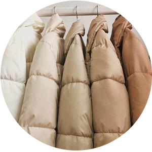

<!DOCTYPE html>
<html lang="en">
    <head>
        <meta charset="utf-8" />
        <title>Topic of Interest | Tatiana Robb</title>
        <link rel="stylesheet" type="text/css" href="css/main.css" />
        <script type="text/javascript" src="js/jquery-3.6.0.min.js"></script>
        <script type="text/javascript" src="js/main.js"></script>
    </head>
</html>

<body>
    <div class="container">
        <h1>Topic of Interest</h1>

        <!--My tiny box about me :))-->
        <section id="floating">
            
            <h2 class="headIng">Tati</h2>
            <p>Whaddup it's me. This my page for class :) Feel free to look around. Not too much to see, but I put in effort!</p>

            <h2>Stats</h2>
            <ul>
                <li>Insanely tall</li>
                <li>Aries</li>
                <li>Senior @ NYU</li>
                <li>Clearly a web designer</li>
                <li>A Kermit the Frog meme connoisseur</li>
            </ul>

            <!--My Skill Bar-->
            <p>Pure Vibes</p>
            <div class="bar">
                <div class="skills vibes">95%</div>
            </div>

            <p>Astrology</p>
            <div class="bar">
                <div class="skills astrology">55%</div>
            </div>

            <p>Crying</p>
            <div class="bar">
                <div class="skills crying">100%</div>
            </div>

            <div class="clear"></div>

            <br />

            <!--My Links!-->
            <nav class="topnav">
                <ul>
                    <li><a href="index.html">Home</a></li>
                    <li><a href="about_me.html">Me</a></li>
                    <li><a href="more_about_me.html">More</a></li>
                    <li><a href="user_experience_design.html">User</a></li>
                    <li><a href="photoshop.html">Photo</a></li>
                    <li><a href="animated_gif.html">GIF</a></li>
                    <li><a href="video.html">Video</a></li>
                </ul>
            </nav>

            <div class="clear"></div>
        </section>

        <!--catergory is: idk-->
        <section id="topic_interest">
            <h2>Punch Needling</h2>
            <p>Sometimes I get in moods where I'd like to make something. Normally I don't (because I'm too cheap to purchase things)
                but last month I was inspired. I wanted to make a rug because my old one is dingy and sad looking. For whatever reason,
                Youtube reached into my thoughts and reccommended me several videos about rug making using the punch needle method. So
                I guess I'll just talk about that.
            </p>
            
            <p id="disclaimer">Disclaimer (click here): I still have yet to punch needle anything :{</p>

            <h3>What is punch needling???</h3>
            <p>
                So there's not really much about what it is. If you know, you know. Apparently it's a type of embroidery where you're pushing 
                your thread or yarn through the fabric rather than stitching it in. <a href="https://www.thesprucecrafts.com/what-is-punch-needle-4774174">
                This</a> website says everything much better! 
            </p>
            <p id="youtube">
                <!--Video of punch needling a rug-->
                <iframe width="360" height="215" src="https://www.youtube.com/embed/f3l6VNgfNdk" 
                title="YouTube video player" frameborder="0" allow="accelerometer; autoplay; clipboard-write; encrypted-media; 
                gyroscope; picture-in-picture" allowfullscreen></iframe>
            </p>

            <h3>What do you need for it?</h3>
            <p>
                The supplies are incredibly simple. All you'd need is thread of your choice, a punch needle (or maybe different punch
                needles of varying...punches?), monks cloth, and a canvas. Maybe a pair of scissors to cut off loose threads. 
            </p>

            <h3>Why should I (me. Tatiana) punch needle something?</h3>
            <ul>
                <li>You need stuff to put on your wall</li>
                <li>It's pretty easy to do. Just need to punch a whole through some cloth</li>
                <li>Looks fun</li>
                <li>It could end up being a hobby??</li>
                <li>Could be relaxing</li>
                <li>Gift idea lol</li>
            </ul>

            <h3>Mini photo gallery of the things YOU (me) could punch needle</h3>
            <!--My mini photo gallery :)-->
            <div class="row">
                <div class="column">
                    
                </div>
                <div class="column">
                    
                </div>
                <div class="column">
                    
                </div>
            </div>
            <figcaption>
                The cloud and leaf punch needle circle thing are both by 
                <a href="https://www.etsy.com/shop/TheCherryBlossomUS?ref=simple-shop-header-name&listing_id=962040903">The
                Cherry Blossom US</a>.
                while the whale punch needle picture is from 
                <a href="https://www.etsy.com/shop/LemonArtCrafts?ref=simple-shop-header-name&listing_id=978710433"> Lemon Art
                Crafts</a>
            </figcaption>
            <div class="clear"></div>
        </section>
    </div>
</body>